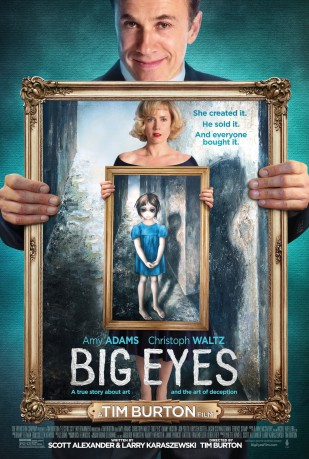

Auszeichnungen: 1 GoldenGlobes gewonnen
 gesehen am 31.08.2015
gesehen am 31.08.2015Alternativ: Big Eyes
Auszeichnungen: 1 GoldenGlobes gewonnen gesehen am 31.08.2015
 
 IMDB-Wertung: 7.0 / 10
IMDB-Wertung: 7.0 / 10  Metascore:
Metascore: 
In San Francisco in the 1950s, Margaret was a woman trying to make it on her own after leaving her husband with only her daughter and her paintings. She meets gregarious ladies' man and fellow painter Walter Keane in a park while she was struggling to make an impact with her drawings of children with big eyes. The two quickly become a pair with outgoing Walter selling their paintings and quiet Margaret holed up at home painting even more children with big eyes. But Walter's actually selling her paintings as his own. A clash of financial success and critical failure soon sends Margaret reeling in her life of lies. With Walter still living the high life, Margaret's going to have to try making it on her own again and re-claiming her name and her paintings.
Jahr: 2014
Dauer: 106 Minuten
FSK: 0
Land: USA Studio: Weinstein Company, TheTonspuren: DTS - ,
Untertitel: Deutsch,
Auflösung: 1080p (1920x1040) Größe: 8939 MB
Genre: Biographie, Krimi, Drama, Liebe
Regisseur:  Tim Burton
Tim Burton
Drehbuch: Scott Alexander, Larry Karaszewski
Soundtrack: Danny Elfman
Darsteller:
 Amy Adams als Margaret Keane
Amy Adams als Margaret Keane Christoph Waltz als Walter Keane
Christoph Waltz als Walter Keane Danny Huston als Dick Nolan
Danny Huston als Dick Nolan Krysten Ritter als DeeAnn
Krysten Ritter als DeeAnn Jason Schwartzman als Ruben
Jason Schwartzman als Ruben Terence Stamp als John Canaday
Terence Stamp als John Canaday Jon Polito als Enrico Banducci
Jon Polito als Enrico Banducci James Saito als Judge
James Saito als Judge Emily Maddison als 2nd Olivetti Girl
Emily Maddison als 2nd Olivetti Girl Gabe Khouth als Dad at Art Show
Gabe Khouth als Dad at Art Show Peter Kelamis als Real Estate Guy
Peter Kelamis als Real Estate Guy Desiree Zurowski als Tipsy Lady
Desiree Zurowski als Tipsy Lady Vincent Gale als Tipsy Man
Vincent Gale als Tipsy Man Fred Keating als Priest
Fred Keating als Priest Heather Doerksen als Gossipy Woman #1
Heather Doerksen als Gossipy Woman #1 Fiona Vroom als Gallery Assistant
Fiona Vroom als Gallery Assistant Jill Morrison als Gallery Patron
Jill Morrison als Gallery Patron Aaron Craven als Early Buyer
Aaron Craven als Early Buyer Dale Wolfe als TV Host
Dale Wolfe als TV Host Tony Alcantar als Fan #2
Tony Alcantar als Fan #2 Andrew Airlie als Rich Man
Andrew Airlie als Rich Man Michael Kopsa als NY Society Man
Michael Kopsa als NY Society Man Barclay Hope als Gannett Lawyer
Barclay Hope als Gannett Lawyer Michael St. John Smith als Margaret's Lawyer
Michael St. John Smith als Margaret's Lawyer Eric Keenleyside als Gannett Lawyer #2
Eric Keenleyside als Gannett Lawyer #2 Matthew Kevin Anderson als Hipster Man
Matthew Kevin Anderson als Hipster Man Britt Irvin als Hipster Lady
Britt Irvin als Hipster LadyDatei: X:\2014(A-F)\Big Eyes (2014, FSKo.Al., 1920x1040).mkv seit 25.08.2015
Festplatte: HD 2013(I-Z)-2014(A-Z)
 Es gibt insgesamt 119 Filme in der Gruppe '2014(A-F)'
Es gibt insgesamt 119 Filme in der Gruppe '2014(A-F)'